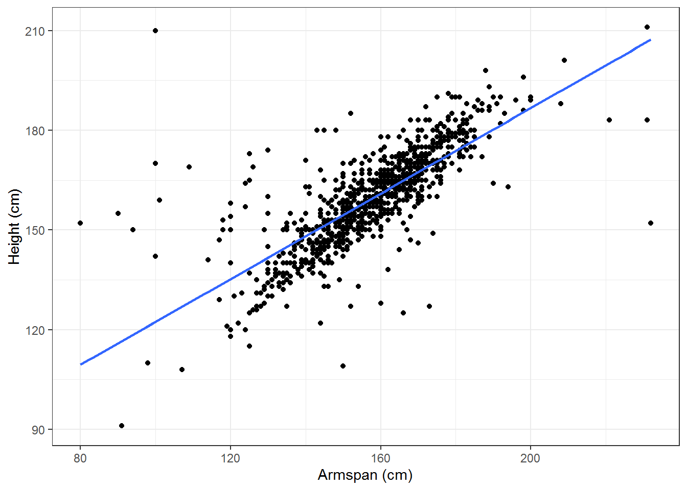

15.6 Exploring Bivariate Data Numerically
15.6.1 Categorical \(\times\) Numerical Data
One of the primary uses of numerical statistics measuring the center and variation of data sets is to compare the properties of two or more data sets based on a categorical variable. For instance, if we look at the data from the 1985 Current Population Survey, CPS85 in the MosaicData R package we can compare wages (in dollars per hour) for different genders.
We will first look at the possible centers that we can use to compare the populations.
| Median | Arithmetic Mean | Harmonic Mean | Geometric Mean | |
|---|---|---|---|---|
| Male | $8.93 | $9.99 | $7.52 | $8.72 |
| Female | $6.80 | $7.88 | $6.18 | $6.92 |
In order to help us to determine which of these centers to use, we need to consider the properties of the variable that we are studying. Since a wage is a rate (dollars per hour), the harmonic mean would be the most appropriate of measure of center to use. However, one could also easily justify the use of the median to say that the average female has a lower wage than the average male.
Related Content Standards
- (7.SPB.4) Use measures of center and measures of variability for numerical data from random samples to draw informal comparative inferences about two populations.
- (HSS.ID.2) Use statistics appropriate to the shape of the data distribution to compare center (median, mean) and spread (interquartile range, standard deviation) of two or more different data sets.
- (HSS.ID.3) Interpret differences in shape, center, and spread in the context of the data sets, accounting for possible effects of extreme data points (outliers).
This choice of center is further justified when looking at the density plot of the wages for the 534 individuals sampled and noticing that it is skewed right, with some significant outliers, and has a distribution that resembles a lognormal distribution (for which the harmonic mean is considered the appropriate center).
library(mosaicData)
ggplot(CPS85, aes(x=wage)) + geom_density(kernel = "gaussian", aes(colour = factor(sex))) + labs(x= "Wages") + theme(legend.title = element_blank())Figure 15.15: Density Plot of Wages
We can also use the quartiles of the two distributions and the inner quartile range, along with the corresponding box plots, to further clarify the differences between male and female wages.
| Q0 (Min) | Q1 | Q2 (Median) | Q3 | Q4 (Max) | IQR | |
|---|---|---|---|---|---|---|
| Male | $1.00 | $6.00 | $8.93 | $13.00 | $26.29 | $7.00 |
| Female | $1.75 | $4.75 | $6.80 | $10.00 | $44.50 | $5.25 |
We notice that there is less variability in the female wages and 75% of the females in the sample make less than $10.00 per hour, where just over half of the males make less than $10.00 per hour.
15.6.2 Numerical \(\times\) Numerical Data
When we are exploring the relationship between two variables that are numerical, we would like to find some type of numerical description of the strength of association between the variables. If the numerical variables are both either ordinal or continuous so that the data set for each variable can be ranked in order, then the Kendall rank correlation coefficient (Kendall’s \(\tau\)) can be used to measure how well the relationship between the two variables can be described using a monotonic function.
A pair of observations \((x_i,y_i)\) and \((x_j,y_j)\) are called concordant if \((x_j-x_i)\) and \((y_j-y_i)\) have the same sign. The pair is disconcordant if they have opposite signs. If either of the differences are zero, the pair is said to be tied.
Definition 15.9 For a set of data points, \((x_1, y_1), (x_2, y_2), \ldots, (x_n,y_n)\), where the \(x_i\) and \(y_i\) correspond with ordinal or continuous variables without any tied pairs, Kendall’s correlation coefficient is given by \[\tau = \frac{(\mbox{number of concordant pairs})- (\mbox{number of discordant pairs})}{\binom{n}{2}},\] where \(\binom{n}{2}=\frac{n(n-1)}{2}\) is the number of ways to choose pairs from \(n\) items.
If the data set include tied pairs, an adjustment in the formula is needed to create measures \(\tau_b\) or \(\tau_c\), which are the standard outputs from statistical applications.
When the variables are
- continuous,
- fit a normal distribution, and
- have a linear relationship,
the strength of the association between the variables is given by the Pearson correlation coefficient (Pearson’s \(\rho\)).
Definition 15.10 For a set of data points, \((x_1, y_1), (x_2, y_2), \ldots, (x_n,y_n)\), where the \(x_i\) and \(y_i\) correspond with continuous variables, Pearson’s correlation coefficient is given by \[\rho = \frac{ \sum_{i=1}^n (x_i-\overline{x})(y_i-\overline{y})}{\sqrt{\sum_{i=1}^n (x_i-\overline{x})^2} \sqrt{\sum_{i=1}^n (y_i-\overline{y})^2}},\] where \(\overline{x}\) and \(\overline{y}\) are the arithmetic means of the two data sets.
For both Kendall’s \(\tau\) and Pearson’s \(\rho\), the values are always between \(-1\) and \(1\). Negative values correspond to and decrease in one of the variables with an increase in the other. Positive values correspond to both variables increasing and decreasing together. Values closer to \(0\) represent weaker relationships with the relationship being stronger as the value gets closer to \(1\) or \(-1\).
The interpretation of the values of the correlation coefficients are highly dependent upon the context. One needs to keep this in mind with various “rules of thumb” that have “moderate correlation” for ranges such as 0.40-0.69 or 0.20-0.50. One issue that students often struggle with is that they want the correlation to be higher than 0.90 to be considered strong. While this high of a correlation may occur in the natural science labs, in the social sciences research, this rarely occurs.
We can explore these two measures of association using the nutritional information from McDonald’s11.

Figure 15.16: Fat and Calories from Fat (Pearson: 0.9996, Kendall: 0.9942)
Figure 15.17: Fiber and Grams of Fat (Pearson: 0.5739, Kendall: 0.4679)
Figure 15.18: Carbohydrates and Grams of Fat (Pearson: 0.4422, Kendall: 0.2985)
Figure 15.19: Sugar and Sodium (Pearson: -0.2935, Kendall: -0.0895)
We see that if the relationship is close to a linear relationship that both \(\rho\) and \(\tau\) are close to \(1\). We can also see that for these variables, both \(\rho\) and \(\tau\) generate similar results. If instead, the relationship is strong, but not linear, then the two correlation coefficients differ with \(\tau\) being much closer to \(1\) or \(-1\).
Figure 15.20: Example with Pearson correlation of 0.8171 and Kendall correlation of 1
Figure 15.21: Example with Pearson correlation of -0.6747 and Kendall correlation of -1
Related Content Standards
- (8.SPA.2) Know that straight lines are widely used to model relationships between two quantitative variables. For scatter plots that suggest a linear association, informally fit a straight line, and informally assess the model fit by judging the closeness of the data points to the line.
- (8.SPA.3) Use the equation of a linear model to solve problems in the context of bivariate measurement data, interpreting the slope and intercept.
Looking at a population of 1000 students from around the world using the Census at School random sampler, we can look at how the height and armspan of the individuals in this population may be related.
Figure 15.22: Height and Armspan
Looking at the scatterplot of the data, it appears that there may be a linear relationship between the two variables. Because of the possible linearity of this relationship, we look at the Pearson’s correlation coefficient and see that \(\rho = 0.7627\), confirming a possible linear relationship.
We would now like to estimate the linear relationship. In doing so, we are looking for the equation of a line that `best’ fits the data. If we let \(y\) represent a person’s height (in cm) and \(x\) represent a person’s armspan (in cm), we model the relationship with a function of the form \(y=mx+b\).
One method of measuring how well the linear model fits the data is to measure the difference between the actual \(y\)-value and the predicted \(y\)-value for each data point. We call this value the residual. \[\mbox{Residual} = \mbox{actual }y\mbox{-value} - \mbox{predicted }y\mbox{-value}\]

Figure 15.23: Residuals of a Linear Regression
If we write our data points as ordered pairs, \(\left\{ (x_i,y_i)\right\}\), we let \[r_i = y_i - \left( m\cdot x_i + b\right).\] One idea is to find the values for \(m\) and \(b\) that minimize the sum of these residuals. However, a large positive residual in one value could compensate for a large negative residual in another. So one way that we could compensate for this would be to minimize the sum of the absolute values of the residuals. While this option does work, to find the Least Absolute Deviations (LAD) regression, it is not the most common. Instead, the common method is to minimize the sum of the squares of the residuals, \[S = \sum_{i=1}^n r_i^2,\] to determine the least squares approximation.
If we let \[S(m,b) = \sum_{i=1}^n (y_i - m\cdot x_i -b)^2\] we can minimize this function by looking at its partial derivatives, \[\frac{\partial S}{\partial m} = \sum_{i=1}^n \left( 2 \cdot (y_i - m \cdot x_i - b ) \cdot -x_i \right) = \left( \sum_{i=1}^n -2 x_i y_i \right) + \left(\sum_{i=1}^n 2x_i^2 \right) m + \left(\sum_{i=1}^n 2 x_i \right) b\] and \[\frac{\partial S}{\partial b} = \sum_{i=1}^n \left( 2 \cdot (y_i-m\cdot x_i - b) \cdot (-1) \right) = \left(\sum_{i=1}^n -2y_i \right) + \left( \sum_{i=1}^n 2 x_i \right) m + \left( \sum_{i=1}^n 2 \right) b\] We then find the minimal value of \(S\) where these derivatives are both zero, which is the solution to the system of equations
\[\begin{align} \left( \sum_{i=1}^n 2 x_i \right) m + \left( \sum_{i=1}^n 2 \right) b & = \sum_{i=1}^n 2y_i \\ \left(\sum_{i=1}^n 2x_i^2 \right) m + \left(\sum_{i=1}^n 2 x_i \right) b & = \sum_{i=1}^n 2 x_i y_i \end{align}\]
We can see from the first equation in the system that this is equivalent to \[2n \cdot \left(\frac{1}{n}\sum_{i=1}^n x_i \right) m + 2n b = 2n \left(\frac{1}{n} \sum_{i=1}^n y_i \right)\] which can be written as \[\overline{y} = m \overline{x} +b\] where \(\overline{x}\) and \(\overline{y}\) are the arithmetic means of the \(x_i\) and \(y_i\), respectively. This implies that the point \((\overline{x},\overline{y})\) always lies on the least squares linear approximation.
For the example of the height and the armspan, the least squares linear approximation is that \[\mbox{Height (cm)} = 0.64 \cdot \mbox{Armspan (cm)} + 58.01\]

This means that for the population that we are analyzing, an increase of 1 cm in the armspan of a person would correspond to an increase of 0.64 cm in the height of the person.
In order to determine how well this line fits the data, we want to compare the total sum of squares \[\sum_{i=1}^n (y_i - \overline{y} )^2\] to the residual sum of squares \[\sum_{i=1}^n ( y_i - (m\cdot x_i +b))^2\] using \[R^2 = 1 - \frac{\sum_{i=1}^n ( y_i - (m\cdot x_i +b))^2}{\sum_{i=1}^n (y_i - \overline{y} )^2}.\] This parameter is the proportion of the variance in the dependent variable (\(y\)) that is predictable from the independent variable (\(x\)).
For the example of height and armspan, \(R^2= 0.58\) meaning that \(58\%\) of the variance in the height can be explained by the armspan.
Looking at the scatterplot for armspan and height, we notice that there is a large cluster in the middle of the data that seems to have a different slope than the estimated line. We also notice that the model given by the least squares approximation says that a person without any armspan would still be 58 cm tall. Using this information, we could insist that the intercept for the linear approximation would be at the origin with the interpretation that someone with zero armspan would also have zero height.
With this additional constraint, we can see from the sum of squares of the residual that \(m = \frac{\overline{y}}{\overline{x}}\). So the data would be modeled by \[\mbox{Height (cm)} = 1.01 \cdot \mbox{Armspan (cm)} \]

So we see that even though this does not minimize the sum of squares, it may be the best approximation for our data in terms of the portion of the population for which we are focused and within the context of the situation.
15.6.3 Categorical \(\times\) Categorical Data
Related Content Standards
- (8.SPA.4) Understand that patterns of association can also be seen in bivariate categorical data by displaying frequencies and relative frequencies in a two-way table. Construct and interpret a two-way table summarizing data on two categorical variables collected from the same subjects. Use relative frequencies calculated for rows or columns to describe possible association between the two variables.
- (HSS.ID.5) Summarize categorical data for two categories in two-way frequency tables. Interpret relative frequencies in the context of the data (including joint, marginal, and conditional relative frequencies). Recognize possible associations and trends in the data.
When analyzing the interactions between two categorical variables, the first step usually involves the creation of a two-way frequency table that organizes the number of cases for each possible combination of values for the two variables. Using a random sample of 1000 students from the Census at School site, we can explore possible relationships between the country and the way that the students get to school. In order to simplify the table we combined all of the categories with just a few cases into a general ‘other’ category.
| Bus | Car | Walk | Other | Total | |
|---|---|---|---|---|---|
| Australia | 63 | 137 | 56 | 20 | 276 |
| Canada | 103 | 62 | 77 | 18 | 260 |
| New Zealand | 39 | 45 | 43 | 9 | 136 |
| United Kingdom | 33 | 28 | 36 | 8 | 105 |
| United States | 50 | 151 | 12 | 10 | 223 |
| Total | 288 | 423 | 224 | 65 | 1000 |
Just looking at the counts by themselves can sometimes be valuable, but can also lead to poor conclusions. For instance, we may notice that 28 students in the UK travel to school by car, while 62 students in Canada also travel to school by car. Someone just looking at these raw counts may think that students are twice as likely to travel to school by car in Canada as they are in the UK. However, to make such a statement we should instead use the conditional relative frequency tables that are conditioned on each of the two variables.
If we condition on the country, we see that a higher percentage of the students in the sample from the U.K., rather than Canada, travel by car to school.
| Bus | Car | Walk | Other | Total | |
|---|---|---|---|---|---|
| Australia | 22.8% | 49.6% | 20.3% | 7.2% | 100% |
| Canada | 39.6% | 23.8% | 29.6% | 6.9% | 100% |
| New Zealand | 28.7% | 33.1% | 31.6% | 6.6% | 100% |
| United Kingdom | 31.4% | 26.7% | 34.3% | 7.6% | 100% |
| United States | 22.4% | 67.7% | 5.4% | 4.5% | 100% |
Looking at this conditional relative frequency table we can also more easily notice that the students from the United States in the sample are much less likely to walk to school than those from the other countries.
If we condition on the method of transportation to school, we see that of the people in the sample that take a car to school, 35% of them are from the United States, while only 6.6% of the car riders are from the United Kingdom.
| Bus | Car | Walk | Other | |
|---|---|---|---|---|
| Australia | 21.9% | 32.4% | 25% | 30.8% |
| Canada | 35.8% | 14.7% | 34.4% | 27.7% |
| New Zealand | 13.5% | 10.6% | 19.2% | 13.8% |
| United Kingdom | 11.5% | 6.6% | 16.1% | 12.3% |
| United States | 17.4% | 35.7% | 5.4% | 15.4% |
| Total | 100% | 100% | 100% | 100% |
One might also use a joint relative frequency table where each of the entries represents the proportion of the overall sample being analyzed.
| Bus | Car | Walk | Other | Total | |
|---|---|---|---|---|---|
| Australia | 6.3% | 13.7% | 5.6% | 2.0% | 27.6% |
| Canada | 10.3% | 6.2% | 7.7% | 1.8% | 26.0% |
| New Zealand | 3.9% | 4.5% | 4.3% | 0.9% | 13.6% |
| United Kingdom | 3.3% | 2.8% | 3.6% | 0.8% | 10.5% |
| United States | 5.0% | 15.1% | 1.2% | 1.0% | 22.3% |
| Total | 28.8% | 42.3% | 22.4% | 6.5% | 100% |
15.6.4 Exercises
How do the salaries of NFL players, NBA players, and MLB players compare?
Below are test results for eighth graders from four local middle schools based on the proficiency levels of the exam for 2018-2019.
| Level 1 | Level 2 | Level 3 | Level 4 | |
|---|---|---|---|---|
| EMS | 18.88% | 22.89% | 29.72% | 28.51% |
| CRMS | 40.00% | 34.86% | 16.00% | 9.14% |
| NMS | 21.96% | 16.86% | 25.88% | 35.29% |
| TMS | 1.92% | 3.85% | 21.15% | 73.08% |
- How could you use this information to determine where to buy a house based on where you would send your child to middle school? Would it change based on the characteristics of your child?
- Would any of your thoughts change based on the following demographic information about these schools?
| English Learners | Students with Disabilities | Econom. Disadv. | |
|---|---|---|---|
| EMS | 5.5% | 13.02% | 38.55% |
| CRMS | 8.1% | 18.38% | 69.17% |
| NMS | 1.99% | 11.58% | 33.75% |
| TMS | 0% | 0.61% | 28.66% |
- The following table describes the age distributions of people in the United States and Japan. Compare and contrast the different populations. (from CIA Factbook, downloaded 8/28/2020)
| U.S. Males | U.S. Females | Japan Males | Japan Females | |
|---|---|---|---|---|
| 0-14 years | 31,374,555 | 30,034,371 | 8,047,189 | 7,623,767 |
| 15-24 years | 21,931,368 | 21,006,463 | 6,254,352 | 5,635,377 |
| 25-54 years | 64,893,670 | 64,565,565 | 22,867,385 | 23,317,140 |
| 55-64 years | 20,690,736 | 22,091,808 | 7,564,067 | 7,570,732 |
| 65 years and over | 25,014,147 | 31,037,419 | 16,034,973 | 20,592,496 |
- Below is the population of the United States from the Census of since 1940. Create a linear approximation for the population with the independent variable being years since 1940. Determine how well the linear approximation fits the data.
| Population | |
|---|---|
| 1940 | 132,164,569 |
| 1950 | 151,325,798 |
| 1960 | 179,323,175 |
| 1970 | 203,211,926 |
| 1980 | 226,545,805 |
| 1990 | 248,709,873 |
| 2000 | 281,421,906 |
| 2010 | 308,745,538 |
| 2020 | 331,449,281 |